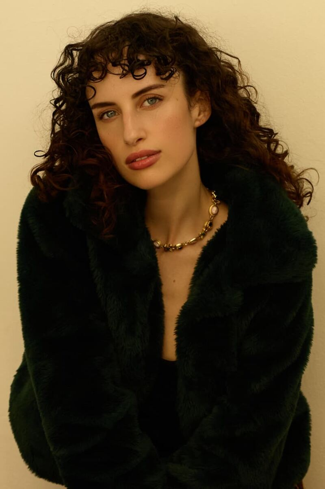
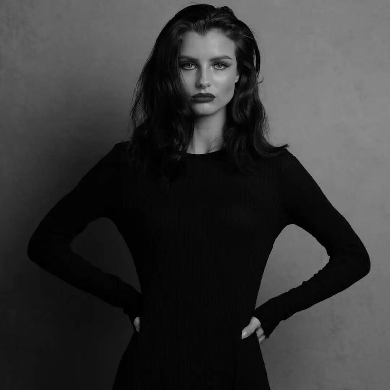
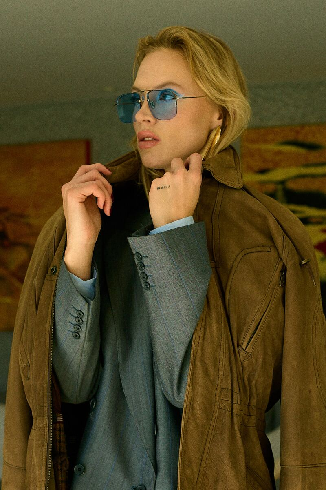
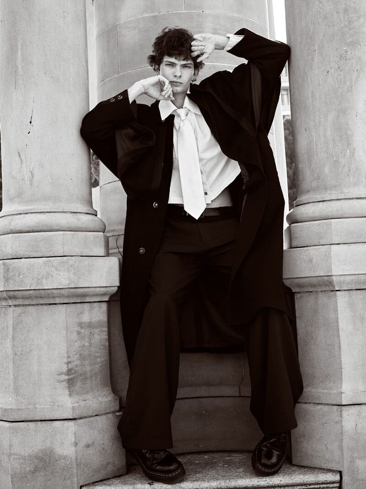
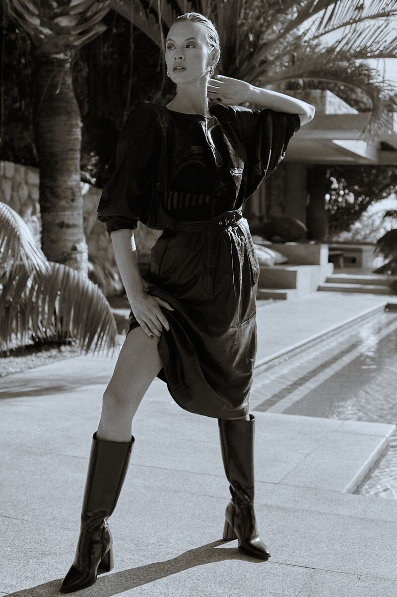
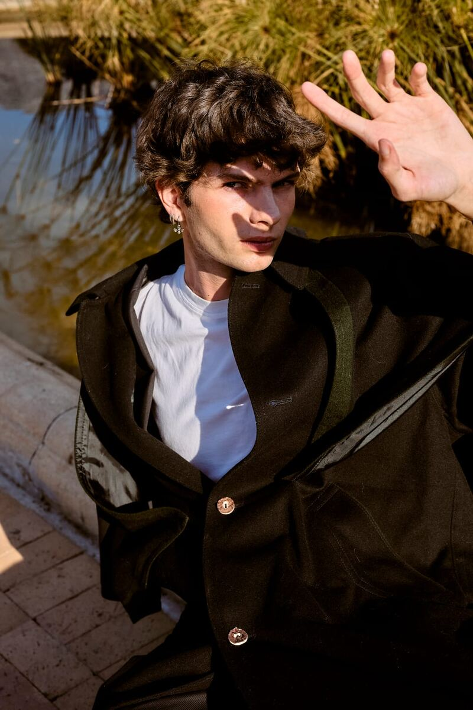
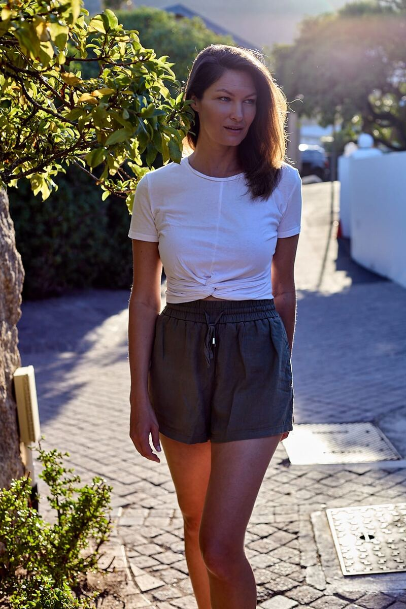
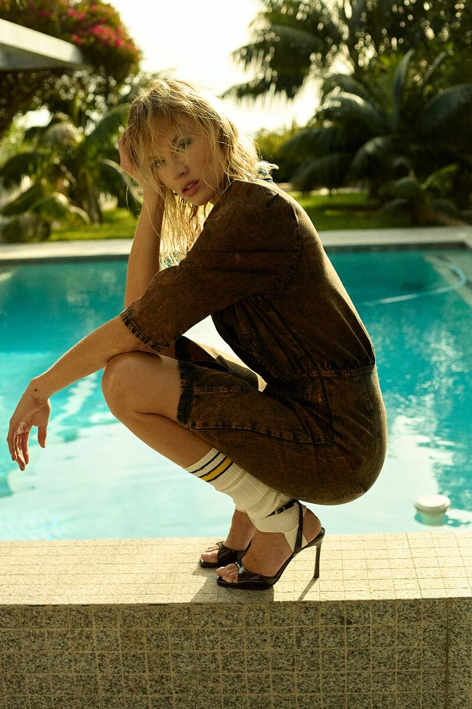
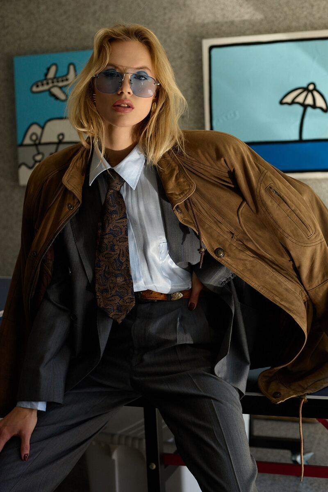
Swipe to browse
Tarryn Taylor
Based in Cape Town
Photographer Portfolio Shoot Director Model Mentor
- Book Your Test ShootAgency-ready portfolios. High-end editorial imagery designed to get you booked.From R2500
- Digitals & PolaroidsThe industry standard. Raw, unedited, and authentic captures for agency submissions.From R1000
- Creative Direction & PosingExpert guidance on movement, angles, and confidence behind the lens.Inquire for Rates
Rapid delivery: same-day turnarounds or within 24–48 hours.
Partners & Associations
Boss Models | Ice Models | Outlaws | 20 Management | Topco | Topco Kids | Hey Judes | D Management
Words by Taylor
“Shooting since 2020 has taught me that a striking image begins long before the shutter clicks.
My focus has shifted from the editorial lens to the artist’s journey — mentoring creatives to awaken a level of confidence and presence that transcends the frame.”
Portfolio
Three ways to work together.
Each one is its own shoot, its own rate, and its own page.
Model Portfolio
Agency-ready portfolios. High-end editorial imagery designed to get you booked.
View model work →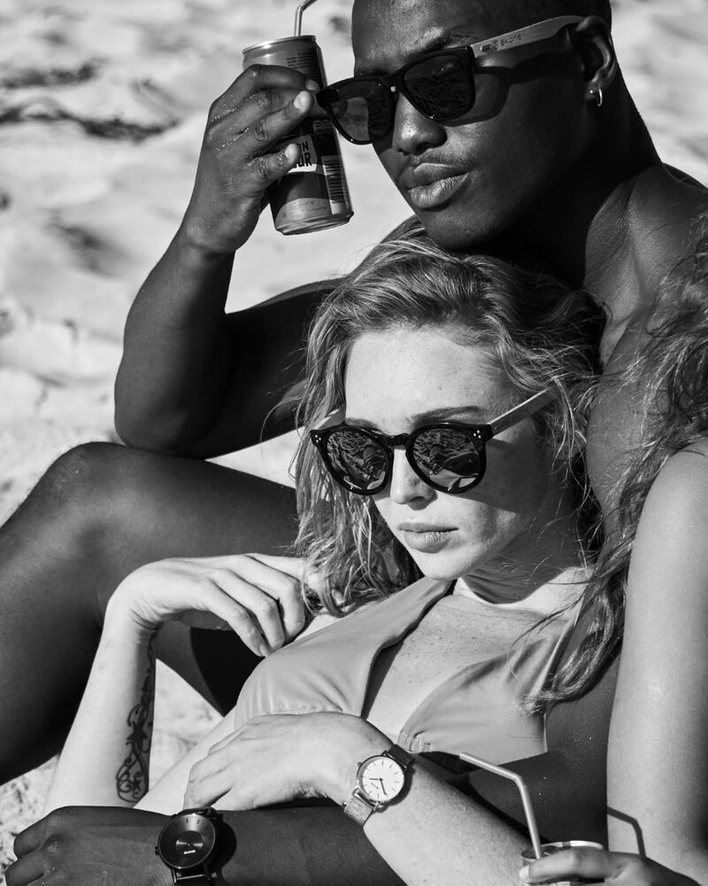
Commercial
Campaign and brand imagery for products, lookbooks and commercial clients.
View commercial work →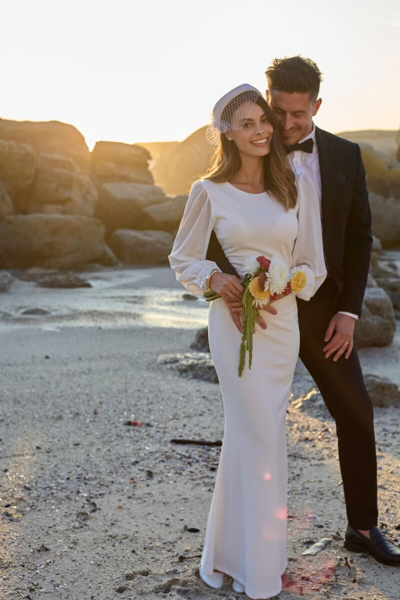
Wedding Couple Portraits
Not the wedding day. Just the two of you, in your wedding attire, before or after. From R6500.
View couples work →Ready for Your Breakthrough?
Whether it’s a creative shoot or a 1-on-1 mentorship session, let’s unlock the next level of your visual story.
Copyright
All photographs on this site are © Tarryn Taylor. All rights reserved.
No licence is granted for the reproduction of these images, or for their use in the training, fine-tuning, or evaluation of machine learning models or generative artificial intelligence systems. Data mining rights are expressly reserved.